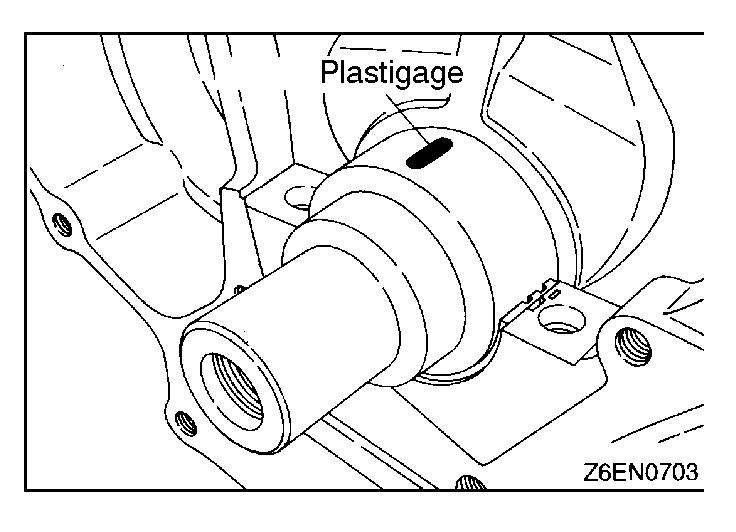
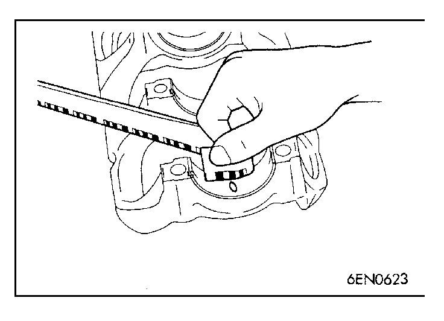
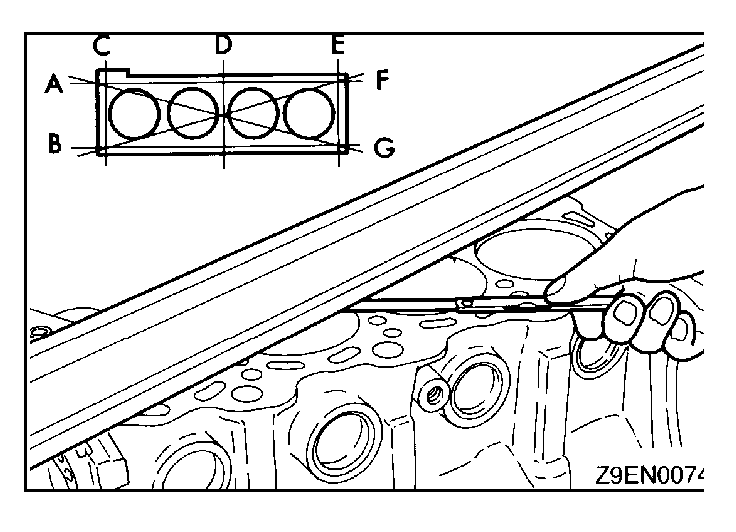
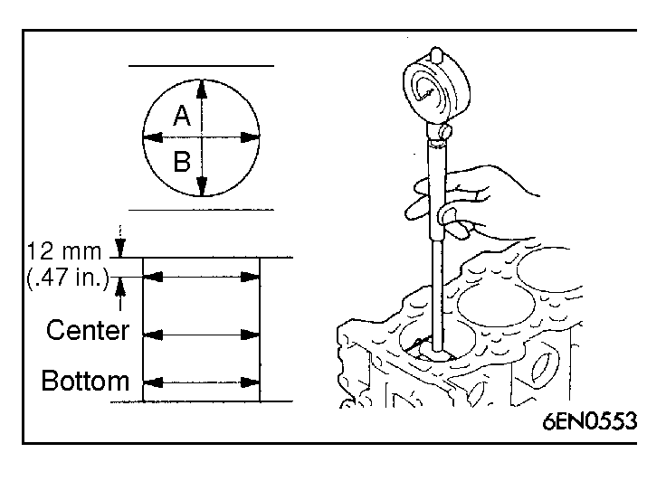
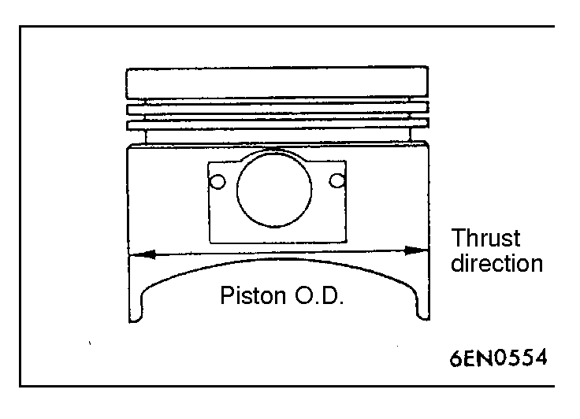

![[Previous]](https://mitsubishitechinfo.com/data/F24S/BUTTONS/fprevg.png)
![[Next]](https://mitsubishitechinfo.com/data/F24S/BUTTONS/fnextg.png)
|

|
INSPECTION
CRANKSHAFT OIL CLEARANCE (PLASTIGAGE METHOD)
(1)Remove oil from the crankshaft journal and crankshaft bearing.
(2)Install the crankshaft.
(3)Cut the Plastigage to the same length as the width of bearing and place it on journal in parallel with its axis. |
|

|
(4)Install the crankshaft bearing cap carefully and tighten the bolts to specified torque.
(5)Carefully remove the crankshaft bearing cap.
(6)Measure the width of the Plastigage at its widest part by using a scale printed on the Plastigage package.
Standard value: 0.02 - 0.04 mm (.0008 - .0016 in.)
Limit: 0.1 mm (.004 in.) |
|



|
CYLINDER BLOCK
(1)Visually check for scratches, rust, and corrosion.
Use also a flaw detecting agent for the check. If defects are evident, correct, or replace.
(2)Using a straightedge and feeler gauge, check the block top surface for warpage. Make sure that the surface is free from gasket chips and other foreign matter.
Standard value: 0.05 mm (.0020 in.)
Limit: 0.1 mm (.004 in.)
(3)If the distortion is excessive, correct within the allowable limit or replace.
Grinding limit: 0.2 mm (.008 in.)
Includes/combined with cylinder head grinding
Cylinder block height (when new):
283.9 - 284.1 mm (11.177 - 11.185 in.)
(4)Check cylinder walls for scratches and seizure. If defects are evident, correct (bored to oversize) or replace.
(5)Using cylinder gauge, measure the cylinder bore and cylindricity. If worn badly, correct cylinder to an oversize and replace piston and piston rings. Measure at the points shown in illustration.
Standard value:
Cylinder I.D.
85.00 - 85.03 mm (3.3465 - 3.3476 in.)
Cylindricity 0.01 mm (.0004 in.) |
|

|
BORING CYLINDER
(1)Oversize pistons to be used should be determined on the basis of the largest bore cylinder.
Piston size identification
| Size |
Identification mark |
| 0.50 O.S. |
0.50 |
| 1.00 O.S. |
1.00 |
|
NOTE
Size mark is stamped on piston top.
(2)Measure outside diameter of piston to be used. Measure it in thrust direction as shown.
(3)Based on measured piston O.D. calculate boring finish dimension.
Boring finish dimension = Piston O.D. +
(clearance between piston O.D. and cylinder) -
0.02 mm (.0008 in.) (honing margin)
(4)Bore all cylinders to calculated boring finish dimension.
Caution
To prevent distortion that may result from temperature rise during honing, bore cylinders, working from No. 2 to No. 4 to No. 1 to No. 3.
(5)Hone to final finish dimension (piston O.D. + clearance between piston O.D. and cylinder).
(6)Check clearance between piston and cylinder.
Clearance between piston and cylinder:
0.03 - 0.05 mm (.0012 - .0020 in.)
NOTE
When boring cylinders, finish all of four cylinders to same oversize. Do not bore only one cylinder to an oversize.
|
|